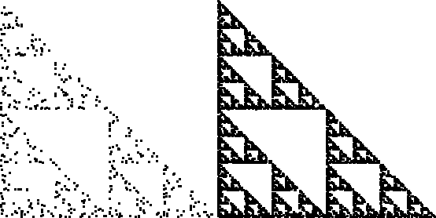

| Start with a point (x0, y0) belonging to the fractal,
for example, take (x0, y0)
the fixed point of one of the Ti. |
| Let {n1, n2, ... } be a random sequence
of numbers, each from {1, ..., N}.
(In Same Picture we'll say why random is important.) |
| Generate a sequence of points |
| (x1, y1) =
Tn1(x0, y0), |
| (x2, y2) =
Tn2(x1, y1), |
| ... |
|
| We shall see this sequence of points eventually will fill up the
fractal to any
prescribed accuracy. For example, here are pictures of the Random Algorithm applied to the
gasket rules. |
|  |
| The left picture shows 500 points, the right 5000. |
|